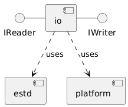

io - IO Library
The module io contains interfaces to model communication between software components. In
addition it contains lock free single producer single consumer data structures implementing
those interfaces. These data structures can be used to communicate through shared memory between
different cores of the same micro controller. Of course they can also be used to communicate
between software components on the same core and just be a tool to model asynchronous programming.

The interfaces provide no guarantees about the memory being allocated to be zeroed out. It might contain “old” data and be used for side channel attacks. If in doubt, the implementation of the interface needs to be checked if it fulfills the security requirements.